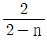
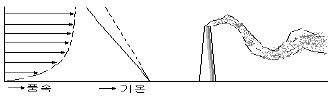
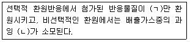
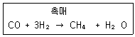
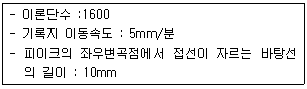

대기환경기사 (2006-03-05 기출문제)
1과목: 대기오염 개론
1. 염소(鹽素) 또는 염화수소 배출관련 업종과 가장 거리가 먼 것은?
- 활성탄 제조업
- 비스코스섬유공업
- 플라스틱공업
- 화학공업
(정답률: 알수없음)

2. LA스모그를 유발시킨 역전현상은?
- 침강역전
- 방사역전
- 접지역전
- 복사역전
(정답률: 90%)
3. Sutton의 확산식에서 지표고도에서 최대오염이 나타나는 풍하측 거리 (Xm)는? (단, Ky=Kz=0.07, He=100m,

= 1.14)- 2480m
- 2950m
- 3390m
- 3950m
(정답률: 알수없음)
4. 상온에서 무색이며, 자극성 냄새를 가진 기체로서 비중이 약 1.03(공기=1)인 오염물질은 ?
- 아황산가스
- 포름알데히드
- 이산화탄소
- 염소
(정답률: 알수없음)
5. 오존층의 O3은 어느 파장의 태양빛을 흡수하여 지상의 생명체들을 보호하는가?
- 자외선 파장 360nm~440nm
- 자외선 파장 290nm~350nm
- 자외선 파장 200nm~290nm
- 고에너지 자외선파장 ＜100 nm
(정답률: 29%)
6. PAN에 관한 설명 중 맞지 않은 것은?
- PAN은 Peroxyacetyl nitrate의 약자이다.
- PAN은 빛을 분산시켜 가시거리를 단축사킨다.
- PAN은 눈에 통증을 일으키며 식물에도 해를 준다.
- PAN은 강산화제로 C6H5 COONO2의 구조식을 갖는다.
(정답률: 알수없음)
7. 대기의 “오존층”에 관한 설명으로 틀린 것은?
- 오존층의 두께를 표시하는 단위는 돕슨(Dobson) 이다.
- 성층권에서 고도에 따라 온도가 상승하는 이유는 성층권의 오존이 태양광선 중의 자외선을 흡수하기 때문이다.
- 오존층에서는 오존의 생성과 소멸이 계속적으로 일어나면서 오존의 농도를 유지한다.
- 오존층이란 성층권에서도 오존이 더욱 밀집해 분포하고 있는 지상 50~60Km 구간을 말한다.
(정답률: 알수없음)
8. Richardson(R)에 관한 설명으로 알맞지 않은 것은?
- R=0는 대류에 의한 난류만 존재함을 나타낸다.
- 0.25 ＜ R 은 수직방향의 혼합이 거의 없음을 나타낸다.
- -0.03 ＜ R ＜ 0 기계적 난류와 대류가 존재하나 기계적 난류가 혼합을 주로 일으킴을 나타낸다.
- Richardson(R)가 큰 음의 값을 가지면 바람이 약하게 되어 강한 수직운동이 일어난다.
(정답률: 알수없음)
9. 일반적인 자동차 디젤기관에 관한 설명과 가장 거리가 먼 것은?(단, 가솔린 기관과 비교)
- 압축비가 높아(15~20) 소음진동이 크다
- 정지가동시 배출가스중 CO농도가 낮다.
- 고속주행시 배출가스중 NOx농도가 높고 매연이 많이 배출된다.
- 열효율이 낮아 연비가 낮다.
(정답률: 50%)
10. 일반적인 가솔린 자동차 배기가스의 구성 중 가장 많은 부피를 차지하는 물질은? (단, 가속상태 기준)
- 탄화수소
- 질소산화물
- 일산화탄소
- 이산화탄소
(정답률: 알수없음)
11. 다음은 바람에 대한 설명이다. 설명이 틀린 것은?
- 풍속은 고도에 따라서 증가하는데 그 이유는 마찰력이 고도가 높아질수록 감소하기 때문이다.
- 지균풍은 마찰력이 무시될 수 일는 고도에서 등압선이 직선일 때 기압경도력과 전향력이 평형을 이루어 등압선에 평행으로 부는 바람이다.
- 바람에 작용하는 전향력은 지구 위도에 따라서 변하는데 크기는 적도부근이 가장 크고, 극지방에서 가장 작게 나타난다.
- 경도풍은 기압경도력과 전향력, 원심력이 평형을 이루어 부는 바람이다.
(정답률: 알수없음)
12. 다음 그림은 오염물의 분산형태의 하나로 환상형을 나타낸다. 이에 대한 설명과 거리가 먼 것은?

- 대기가 아주 불안정한 경우로 난류가 심하다.
- 날씨가 맑고 태양복사가 강한 계절에 잘 발생하며 수직온도 경사가 과단열적이다.
- 일출과 함께 역전층이 해소되면서 하부의 불안정층이 연돌의 높이를 막 넘었을 때 발생한다.
- 연기가 지면에 도달하는 경우 연돌부근의 지표에서 고농도의 오염을 야기하기도 하나 빨리 분산된다.
(정답률: 알수없음)
13. 대기중으로 배출된 이산화탄소는 온실효과에 의하여 지구온난화를 초래하고 있다. 다음 보기 중 대기중의 이산화탄소의 가장 큰 흡수원은?
- 토양
- 미생물
- 식물
- 해수
(정답률: 알수없음)
14. 안료, 색소, 의약품 제조공업에 이용되며 색소침착, 손, 발바닥의 각화, 피부암 등을 일으키는 물질로 가장 알맞은 것은?
- 납
- 크롬
- 비소
- 니켈
(정답률: 60%)
15. 다음 중 대기오염 물질의 농도를 추정하기 위한 상자모델(box model)의 가정으로 적당하지 않은 것은?
- 고려되는 공간에서 오염물의 농도는 균일하다.
- 오염원은 방출과 동시에 균등하게 혼합된다.
- 오염물농도가 균일함에 따라 분해하는 0차반응에 의한다.
- 오염물방출원이 지면전역에 균등하게 분포되어 있다.
(정답률: 알수없음)
16. 먼지 농도를 측정하기 위해 여과지를 통해 공기의 속도를 0.6m/sec 로 하여 1.5시간 동안 여과시킨 결과, 깨끗한 여과지에 비하여 사용된 여과지의 빛전달율이 80% 였다면, 1000m당 Coh는?
- 약 4.0
- 약 3.0
- 약 2.5
- 약 1.5
(정답률: 39%)
17. 다음 대기열역학에 관한 설명 중 틀린 것은?
- 플랑크(Plank)는 흑체(Black Boby)로부터 복사되는 파장별 에너지 강도를 표면온도와 파장의 함수로 나타냈으며, 이 식을 플랑크 방정식이라 한다.
- 흑체의 단위표면적에서 복사되는 에너지(E)와 그 물체의 표면온도(T)와는 E=σㆍ T4으로 나타내며, 이를 스테판-볼쯔만 법칙이라 한다.
- 복사에너지 중 파장에 대한 에너지강도가 최대가 되는 파장과 흑체의 표면온도는 반비례하며, 이 관계를 비인의 변위법칙이라고 한다.
- 태양복사는 장파복사, 지구복사는 단파복사라 하며, 지표면에서 관측된 태양복사의 에너지는 지구대기 상단에의 값에 대해 전체적으로 크게 나타난다.
(정답률: 알수없음)
18. 아황산가스에 대한 저항력이 가장 강한 식물은?
- 담배
- 양배추
- 자주개나리
- 알팔파
(정답률: 50%)
19. 50m의 높이가 되는 굴뚝내의 배출가스 평균온도가 300℃, 대기온도가 20℃일 때 통풍력은? (단, 연소가스 및 공기의 비중을 1.3kg/Nㅡ3이라고 가정)
- 약 15 mmH2O
- 약 30 mmH2O
- 약 45 mmH2O
- 약 60 mmH2O
(정답률: 46%)
20. 다이옥신(Dioxin)에 관한 설명 중 틀린 것은?
- 표준상태에서 증기압이 매우 낮은 고형 화합물이다.
- 다이옥신류는 크게 PCDD, PCDF로 대별된다.
- 수용성은 낮으나 벤젠등에 용해되며 토양 등에 흡수 된다.
- 소각로에서 1000℃ 정도의 고온온도에서 Fly ash 표면에 염소공여체와 반응하여 배출된다.
(정답률: 알수없음)
2과목: 연소공학
21. 프로판과 부탄이 용적비 4:1 로 혼합된 가스 1Sm3가 완전 연소할 때 발생하는 CO2의 량(Sm3)은?
- 2.7
- 3.2
- 3.7
- 3.9
(정답률: 알수없음)
22. 연소과정에서 공기비(m)가 작을 경우 발생되는 현상으로 가장 적절한 것은?
- 배기가스 중 황산화물과 질소산화물의 함량이 많아져 연소장치의 부식을 가중시킨다.
- 통풍력이 강하여 배기가스에 의한 열손실이 크다.
- 연소가스중의 일산화탄소량의 증가로 공해의 원인이 된다.
- 연소실에서 연소온도가 낮아진다.
(정답률: 40%)
23. 다음 연료의 성분중 고위발열량이 가장 높은 것은?
- H2
- CO2
- O2
- N2
(정답률: 알수없음)
24. 헥산(C6H14)이 이론적으로 완전연소 된다고 가정할 때 부피기준에서 공연비(AFR : Air Fuel Ratio)는?
- 45.2
- 69.5
- 53.2
- 77.5
(정답률: 알수없음)
25. 가로, 세로, 높이가 3.0m, 2.0m, 3.0m의 연소실에서 연소실 열발생율을 40×104kcal/m3ㆍhr 가 되도록 하려면 시간당 중유를 대략 몇 kg 연소시켜야 하는가? (단, 중유 저발열량 10000Kcal/kg)
- 240
- 360
- 480
- 720
(정답률: 42%)
26. 액체연료의 연소장치인 유압분무식 버너에 관한 설명으로 틀린 것은?
- 대용량 버너 제작이 용이하다.
- 분무각도가 40° ~ 90° 로 크다.
- 연료의 점도가 크거나 유압이 5kg/cm2이하가 되면 분무화가 불량하다.
- 유량조절 범위가 넓어 부하변동의 적응이 용이하다.
(정답률: 알수없음)
27. 메탄 1Sm3를 공기과잉계수 1.4로 연소시킬 경우 습윤연소가스량(Sm3)은?
- 8.3
- 10.3
- 12.3
- 14.3
(정답률: 알수없음)
28. 메탄올이 5kg이 완전연소되는데 필요한 이론 공기량은? (단, 메탄올 : CH3OH)
- 16 Sm3
- 25 Sm3
- 32 Sm3
- 39 Sm3
(정답률: 30%)
29. 액체연료의 장점으로 틀린 것은?
- 회분이 거의 없어 재의 처리를 하지 않아도 된다.
- 점화, 소화 및 연소의 조절이 쉽니다.
- 발열량이 높고 성분이 일정하며 효율이 높다.
- 연소온도가 높고 국부적 가열이 용이하다.
(정답률: 34%)
30. 액체 연료인 석유의 물성치에 관한 설명으로 틀린 것은?
- 석유류의 증기압이 큰 것은 착화점이 낮아서 위험하다.
- 석유류의 인화점은 휘발유 -50℃ ~ 0℃ , 등유 30℃ ~ 70℃ , 중유 90℃ ~ 120℃ 정도다.
- 석유류의 비중이 커지면 탄화수소비(C/H)가 적어지고 발열량이 감소한다.
- 석유의 동점도가 감소하면 끊는 점이 낮아지고 유동성이 좋아진다.
(정답률: 알수없음)
31. 언떤 연료를 분석하였더니 그 중량 기준 성분이 C 83%, H 14%, H2O 3% 이었다면 건조 연료 1.5kg의 연소에 필요한 이론 공기량 (Sm3)은? (단, 연료에서 수분을 제거한 것이 건조 연료임)
- 약 13.2
- 약 15.2
- 약 17.2
- 약 19.2
(정답률: 46%)
32. 기체연료 연소방식 중 예혼합연소에 관한 설명으로 틀린 것은?
- 연소기 내부에서 연료와 공기의 혼합비가 변하지 않고 균일하게 연소된다.
- 역화의 위험이 없으며 공기를 예열할 수 있다.
- 화염온도가 높아 연소부하가 큰 경우에 사용이 가능하다.
- 연소조절이 쉽고 화염길이가 짧다.
(정답률: 알수없음)
33. 다음은 착화온도에 대한 설명이다. 이중 틀리게 설명된 것은?
- 공기의 산소농도 및 압력이 높을수록 착화온도는 낮아진다.
- 석탄의 탄화도가 증가 할수록 착화온도는 낮아진다.
- 화학결합의 활성도가 클수록 착화온도는 낮아진다.
- 대체로 탄화수소의 착화온도는 분자량이 클수록 낮아진다.
(정답률: 알수없음)
34. 에틸알코올(C2H5OH) 1kg이 연소하는데 필요한 이론공기량은?
- 5.0 Sm3/kg
- 5.8 Sm3/kg
- 6.9 Sm3/kg
- 7.4 Sm3/kg
(정답률: 34%)
35. C = 87(중량%), H = 10(중량%), S = 3(중량%)인 중유의 CO2max은 몇%인가? (단, 표준상태, 건조가스 기준)
- 약 32.3
- 약 27.3
- 약20.3
- 약 16.3
(정답률: 알수없음)
36. 유황 함유량이 1.6%(W/W)인 증유를 매시 100톤 연소시킬 때 굴뚝으로 부터의 SO2 배출량(Sm3/hr)은? (단, 유황은 전량이 반응하고 이 중 5%는 SO3로서 배출되며 나머지는 SO2로 배출된다.)
- 1120
- 1064
- 800
- 535
(정답률: 알수없음)
37. 질소 및 산소를 포함하지 않은 액체 연료의 이론 건배기 가스량 Go(Sm3/kg)와 이론공기량 Ao의 관계로 알맞은 것은? (단, h는 연료 중의 수소의 중량분율이다.)
- G0= A0-8.2h
- G0= A0-5.6h
- G0= A0-4.5h
- G0= A0-3.7h
(정답률: 71%)
38. 프로판(C3H8)의 고위발열량 24200 kcal/Nm3이면, 저위발열량은 몇 kcal/Nm3인가? (단, 물 1kg당 증발잠열은 600 kcal 이다.)
- 약 20,200
- 약 21,800
- 약 22,300
- 약 23,500
(정답률: 알수없음)
39. 액체연료의 대부분은 원유의 정제에 의해 만드는 석유계 연료로서 많은 탄화수소의 혼합물들이다. 탄화수소의 분류중 나프텐계(Naphthene)의 일반식은?
- CnH2n
- CnH2n+2
- CnH2n-6
- CnH3n-2
(정답률: 알수없음)
40. 저발열량이 6,000kcal/Sm3인 연소가스의 이론연소온도는 몇 ℃인가? (단, 이론습연소가스량은 10Sm3/Sm3, 연소가스의 정압 비열은 0.38kcal/Sm3ㆍ℃, 연료 및 공기온도 15℃)
- 약 1300
- 약 1400
- 약 1500
- 약 1600
(정답률: 알수없음)
3과목: 대기오염 방지기술
41. 습식, 탈황, 탈질법의 단점으로 알맞지 않는 것은?
- 질산염을 형성하여 수질오염의 원인이 된다.
- 아황산가스의 제거효율이 낮다.
- 생성되는 부산물의 상품가치가 적다.
- 장치비가 많이 든다.
(정답률: 42%)
42. 전기집진장치의 장애현상중 2차 전류가 많이 흐르는 경우의 원인으로 가장 거리가 먼 것은?
- 공기 부하시험을 행할 때
- 이온이동도가 큰 가스를 처리할 때
- 방전극이 너무 가늘 때
- 분진의 농도가 너무 높을 때
(정답률: 알수없음)
43. 다음 중 활성탄으로 흡착이 잘 이루어지지 않는 물질은?
- 초산
- 벤젠
- 일산화탄소
- 담배연기
(정답률: 알수없음)
44. 불화수소 0.5%(V/V)를 함유하는 배출가스 2,000Sm3/h 를 Ca(OH)2의 현탁액으로 처리할 때 이론적으로 필요한 시간당 Ca(OH)2의 양은? (단, 원자량은 Ca = 40, F = 19)
- 약 17kg/hr
- 약 23kg/hr
- 약 33kg/hr
- 약 66kg/hr
(정답률: 알수없음)
45. NOx 처리 방법 중 촉매환원법에 대한 설명이다. 빈 칸에 가장 알맞은 내용은? (단, ㄱ, ㄴ 순서)

- NH3, O2
- NH3, CO
- NOx, O2
- NOx, CO
(정답률: 알수없음)
46. 내경이 100mm의 원통내를 20℃ 1기압의 공기가 24m3/hr 로 흐른다. 표준상태의 공기의 비중량은 1.3kg/Sm3, 20℃의 공기의 점도가 1.81 × 10-4 poise이라면 레이놀드 수는?
- 약 22800
- 약 11400
- 약 2280
- 약 1140
(정답률: 29%)
47. 벤튜리 스크러버 적용시 액가스비를 크게 하는 요인으로 틀린 것은?
- 분진의 친수성이 클 때
- 분진의 입경이 작을 때
- 처리가스의 온도가 높을 때
- 분진의 농도가 높을 때
(정답률: 알수없음)
48. NO가스농도가 200ppm인 배기가스 100000Sm3/hr를 CO로 선택적 접촉 환원법으로 처리하는 경우 완전히 처리하기 위한 CO의 시간당 필요량은?
- 5Sm3
- 10Sm3
- 15Sm3
- 20Sm3
(정답률: 22%)
49. 활성탄에 SO2를 흡착시키면 황산이 생성된다. 이를 탈착시키는 방법 중 활성탄 소모나 약산이 생성되는 단점을 극복하기 위해 H2S 또는 CS2를 반응시켜 단체의 S를 생성시키는 방법은?
- 세척법
- 산화법
- 촉매법
- 환원법
(정답률: 알수없음)
50. 다음의 집진 장치중 점착성이 강한 미스트(Mist)의 제거에 가장 접합한 것은?
- 벤츄리 스크러버(Venturi scrubber)
- 여과집진기(Bag Fillter)
- 2단계 전기집진기(two-stage Electrical precipitator)
- 고효율 원심 집진기(High-efficiency cyclone)
(정답률: 알수없음)
51. 반경 10cm, 길이 1m 인 원통형 집진극을 가진 전기집진장치의 가스처리유속이 2.0m/s 이고 먼지가 집진극을 향하는 이동속도가 25cm/s 이라면 먼지제거효율은?
- 약 85%
- 약 92%
- 약 96%
- 약 99%
(정답률: 알수없음)
52. 사이클론의 원추부 높이가 1.4m, 유입구 높이가 20cm, 원통부 높이가 1.4m 일 때 외부선회류의 회전수는? ( 단, N = (1/Ha)[Hb + (Hc/2)] )
- 6회
- 11회
- 14회
- 18회
(정답률: 알수없음)
53. 상온ㆍ상압의 함진가스 180m3/min을 지름 250mm, 유효길이 2.8m인 원통형 bag filter로 처리한다면 처리가스 속도를 1.8m/min 으로 할 때 소요되는 bag의 수는?
- 36개
- 46개
- 56개
- 66개
(정답률: 60%)
54. 원심력집진장치에서 함진가스의 온도가 450°K(함진가스 점도 : 0.09kg/mㆍhr)일 때 절단입경에서 집진율이 50%를 나타내고 있다. 함진가스의 온도가 350K(함진가스 점도 : 0.0748kg/mㆍhr)로 변화되었다면 그 때 집진율(%)은? (단, 기타 조건은 같다.)
- 35.3
- 48.2
- 54.4
- 62.5
(정답률: 20%)
55. 탈취방법 중 물리적인방법인 수세법에 관한 설명과 가장 거리가 먼 것은?
- 타 방법과 병용처리시 전처리로 사용한다.
- 산성가스와 염기성가스를 별도로 처리하여야 한다.
- 암모니아, 저급아민류, 케톤류, 페놀 등의 악취가스 제거에 적용된다.
- 장치가 간단하고 조작이 용이하다.
(정답률: 알수없음)
56. 흡수장치의 종류중 기체분산형 흡수장치로 가장 적절한 것은?
- venturi scubber
- spray tower
- packed tower
- plate tower
(정답률: 50%)
57. 400ppm의 HCl을 함유하는 배출가스를 처리하기 위해 액가스비가 2L/Sm3인 충전탑을 설계하고자 한다. 이 때 발생되는 폐수를 중화하는데 필요한 시간당 0.5N NaOH용액의 양은? (단, 배출가스는 400Sm3/hr로 유입되며, 흡수액인 물에 HCl은 100% 흡수된다.)
- 9.2L
- 11.4L
- 14.2L
- 18.8L
(정답률: 19%)
58. 배기가스내의 질소산화물을 제거하기 위한 촉매환원법에 사용되는 선택적인 환원제에 관한 설명과 가장 거리가 먼 것은?
- CO를 환원제로 사용하는 경우 반응에 소모되지 않고 남는 것은 대기오염을 일으킬 수 있다.
- H2를 사용하는 경우 촉매에 따라 연소반응에서 생기는 CO에 의해서 효력이 줄어들 수 있다.
- NH3를 환원제로 사용하는 경우에는 온도를 통제하여야 한다.
- CH4을 환원제로 사용하는 경우에는 충분한 공기를 공급하여야 한다.
(정답률: 알수없음)
59. 광학현미경을 이용하여 입경을 측정하는 방법에서 입자의 투영면적을 이용하여 측정한 입경중 입자의 면적을 2등분 하는 선의 길이로 나타내는 것은?
- 등면적 직경
- Feret 직경
- martin 직경
- Heyhood 직경
(정답률: 알수없음)
60. 한 송풍기가 1.2 kW의 동력을 이용하여 20m3/min의 공기를 송풍하고 있다. 만약 송풍량이 30m3/min으로 증가했다면 이 때 필요한 송풍기의 소요동력(kW)은?
- 1.5
- 1.8
- 2.7
- 4.1
(정답률: 10%)
4과목: 대기오염 공정시험기준(방법)
61. 원자흡광광도법에서 검량선을 이용한 정량법 중 분석시료중에 다량으로 함유된 공존원소와 목적원소와의 흡광도 비를 구하는 동시 측정을 행하는 것으로 측정치가 흩어져 상쇄하기 쉬우므로 분석값의 재현성이 높아지고 정밀도가 향상되는 것은?
- 검량선법
- 넓이 백분율법
- 표준첨가법
- 내부표준법
(정답률: 알수없음)
62. 굴뚝배출가스중의 오염물질과 연속자동측정방법이 잘못 짝지어 진 것은?
- 아황산가스 - 적외선 흡수법
- 불화수소 - 이온전극법
- 염화수소 - 용액전도율법
- 질소산화물 - 정전위전해법
(정답률: 알수없음)
63. 굴뚝에서 배출되는 질소산화물을 페놀디슬폰산법으로 측정하고자 할 때 사용되는 시약이 아닌 것은?
- 암모니아수
- 질산칼륨표준액
- 과산화수소수
- 이소프로필알코올
(정답률: 알수없음)
64. 굴뚝 등으로 배출되는 배출가스중의 염화수소 분석방법중 정량범위가 가장 넓은 것은?
- 질산은적정법
- 질산칼륨표준액
- 이온크로마토그래프법
- 홉광광도법
(정답률: 알수없음)
65. 시료채취시 흡수액으로 수산화나트륨용액을 사용하지 않는 것은?
- 불소화합물
- 이황화탄소
- 시안화수소
- 브롬화합물
(정답률: 알수없음)
66. 비분산 적외선 분석법에 사용되는 용어의 의미로 틀린 것은?
- 제로 드리프트 : 계기의 최저눈금에 대한 지시치의 일정 기간내의 변동
- 정필터형 : 측정성분이 흡수되는 적외선을 그 흡수파장에서 측정하는 방식
- 비교 광속 : 비교셀을 통하는 빛
- 비교 가스 : 비교셀로 적외선 흡수를 측정하는 경우 적외선을 일정 정도 흡수하는 대조 가스
(정답률: 64%)
67. 어느 굴뚝의 측정공에서 피토우관으로 가스의 압력을 측정해 보니 동압이 15mmH2O이었다. 이 가스의 유속은? (단, 사용한 피토우관의 계수 (C)는 0.85이며 가스의 단위 체적당 질량은 1.2kg/m3로 한다.)
- 약 12.3m/sec
- 약 13.3m/sec
- 약 15.3m/sec
- 약 17.3m/sec
(정답률: 알수없음)
68. 시약, 시액, 표준물질에 관한 설명으로 틀린 것은?
- 시험에 사용하는 표준품은 원칙적으로 특급 시약을 사용한다.
- 표준액을 조제하기 위한 표준용시약은 따로 규정이 없는 한 데시케이터에 보존된 것을 사용한다.
- 표준품을 채취할 때 표준액이 정수로 기재되어 있는 경우는 실험자가 환산하여 기재수치에 '약' 자를 붙여 사용할 수 없다.
- 액체성분의 양을 '정확히 취한다'함은 홀피펫, 메스플라스크 또는 이와 동등 이상의 정도를 갖는 용량계를 사용하여 조작하는 것을 뜻한다.
(정답률: 24%)
69. 분석대상가스가 포름알데히드인 경우, 채취관, 도관의 재질로 적절치 못한 것은?
- 보통강철
- 경질유리
- 석영
- 불소수지
(정답률: 28%)
70. 굴뚝에서 배출되는 가스중 분석대상이 입자상의 비소인 경우 시료용액중의 비소를 무엇과 공침시켜 분리 농축하는가?
- 수산화철(Ⅲ)
- 염화제일주석
- 황산알루미늄
- 수산화칼슘
(정답률: 알수없음)
71. 굴뚝에서 배출되는 가스중의 오염물질을 분석할 때 공정 시험방법상 흡광광도법으로 분석하지 않는 물질은?
- 이황화탄소
- 황산화물
- 황화수소
- 불소화합물
(정답률: 알수없음)
72. 환경대기중의 석면농도를 측정하기 위한 시료 채취 위치 및 시간의 기준으로 가장 적절한 것은?
- 원칙적으로 채취지점의 지상 1.5m되는 위치에서 2L/min의 흡인유량으로 24시간 이상 채취한다.
- 원칙적으로 채취지점의 지상 1.5m되는 위치에서 2L/min의 흡인유량으로 4시간 이상 채취한다.
- 원칙적으로 채취지점의 지상 1.5m되는 위치에서 10L/min의 흡인유량으로 24시간 이상 채취한다.
- 원칙적으로 채취지점의 지상 1.5m되는 위치에서 10L/min의 흡인유량으로 4시간 이상 채취한다.
(정답률: 알수없음)
73. [흡광차분광법은 일반적으로 빛을 조사하는 발광부의 ( ) 정도 떨어진 곳에 설치되는 수광부사이에 형성되는 빛의 이동경로를 통과하는 가스를 실시간으로 분석한다.] ( )안에 알맞은 것은 ?
- 0.1 - 1.0m
- 1 - 5m
- 5 - 50m
- 50 -1000m
(정답률: 17%)
74. 굴뚝에서 배출되는 가스중 황산화물을 측정, 분석하는 내용 중 틀린 것은?(단, 중화적정법 기준)
- 시료를 과산화수소수에 흡수시켜 황산화물을 황산으로 만든 후 수산화나트륨 용액으로 적정한다.
- 이산화탄소의 공존시 영향이 없다.
- 메틸레드-메틸렌 블루우 혼합지시약의 변색점은 pH 5.4이다.
- 적정시 용액의 색이 녹색에서 연한 자주색으로 변한 점을 종말점으로 한다.
(정답률: 알수없음)
75. 대기오염 공정시험방법 중 일반시험방법에 관한 설명으로 옳은 것은?
- 상온 15~25℃, 실온은 1~35℃로 하고, 찬곳은 따로 규정이 없는 한 4℃이하의 곳을 뜻한다.
- '냉후'라 표시되어 있을 때는 보온 또는 가열 후 상온까지 냉각된 상태를 말한다.
- 시험은 따로 규정이 없는 한 상온에서 조작하고 조작 후 그 결과를 관찰한다.
- 냉수는 4℃ 이하, 온수는 50~60℃, 열수는 100℃를 말한다.
(정답률: 알수없음)
76. 가스 크로마토그래프법에서 분리관 내경이 3mm일 경우 사용되는 흡착제 및 담체의 입경범위(㎛)로 맞는 것은? (단, 기체-고체 가스크로마토그래프법, 흡착성고체분말 기준)
- 120~149㎛
- 149~177㎛
- 177~250㎛
- 250~590㎛
(정답률: 알수없음)
77. 환경 대기중 일산화탄소를 수소염 이온화 검출기법(가스크로마토 그래프법)를 이용하여 측정하고자 할 때 일산화탄소는 ( )촉매에 의하여 이온화 검출기로 정량한다. ( )안에 적당한 물질은?

- Ti
- Ni
- Mn
- Pt
(정답률: 알수없음)
78. 다음의 조건을 이용하여 가스크로마토그래프법에서 계산된 보유시간은?

- 5분
- 10분
- 15분
- 20분
(정답률: 34%)
79. [ 시험조작중 즉시란 ( )이내에 표시된 조작을 하는 것을 뜻하며, 감압 또는 진공 이라 함은 따로 규정이 없는 한 ( ) 이하를 뜻한다. ] ( )안에 알맞은 것은?
- 10초, 15mmH2O
- 20초, 25mmH2O
- 30초, 15mmH2g
- 60초, 25mmH2g
(정답률: 알수없음)
80. 환경 대기중 옥시단트 측정방법 중 자동연속측정방법과 가장 거리가 먼 것은?
- 자외선 광도법
- 화학발광법
- 알칼리성 요오드화 칼륨법
- 흡광차분광법
(정답률: 24%)
5과목: 대기환경관계법규
81. 일일오염물질배출량 및 일일유량의 산정방법에 관한 설명으로 알맞지 않는 것은?
- 측정유량의 단위는 매분당 세제곱미터로 한다.
- 먼지외의 오염물질의 배출농도의 단위는 ppm으로 한다.
- 일일조업시간은 측정하기 전 최근 조업한 30일간의 배출시설의 조업시간의 평균치 시간으로 표시한다.
- 일반오염물질에 대한 배출허용기준초과 일일오염물질 배출량은 소수점이하 첫째자리까지 계산한다.
(정답률: 알수없음)
82. 비산먼지의 발생을 억제하기 위한 시설의 설치 및 필요한 조치에 관한 엄격한 기준으로 틀린 것은?
- 수송 및 작업차량 출입문을 설치할 것
- 싣거나 내리는 장소주위에 고정식 또는 이동식 물뿌림 시설(물뿌림반경 7m이상, 수압 5kg/cm2이상)을 설치할 것
- 공사장내 차량통행도로는 다른 공사에 우선하여 포장하도록 할 것
- 보관, 저장시설은 가능한 한 4면이 막히고 지붕이 있는 구조가 되도록 할 것
(정답률: 알수없음)
83. 대기환경규제지역의 지정대상지역기준으로 적절한 것은?
- 상시측정결과 대기오염도가 환경정책기본법의 규정에 의하여 설정된 환경기준의 60% 이상인 지역
- 상시측정결과 대기오염도가 환경정책기본법의 규정에 의하여 설정된 환경기준의 70% 이상인 지역
- 상시측정결과 대기오염도가 환경정책기본법의 규정에 의하여 설정된 환경기준의 80% 이상인 지역
- 상시측정결과 대기오염도가 환경정책기본법의 규정에 의하여 설정된 환경기준의 90% 이상인 지역
(정답률: 알수없음)
84. 다음 위임업무의 보고사항 중 년간 보고 횟수가 가장 적은 것은?
- 굴뚝자동측정기기의 정도검사현황
- 비산먼지발생대상사업 신고현황
- 휘발성유기화합물 배출시설 지도, 점검 실적
- 수입자동차 배출가스 인증 및 검사현황
(정답률: 0%)
85. 대기환경보전법에 사용되는 용어의 정의로 알맞지 않은 것은?
- 검댕 : 연소시 발생하는 유리탄소가 응결하여 입자의 지름이 1mm 이상되는 입자상 물질
- 가스 : 물질의 연소, 합성, 분해시 발생하거나 물리적 성질에 의하여 발생하는 기체상 물질
- 먼지 : 대기중에 떠다니거나 흩날려 내려오는 입자상 물질
- 휘발성유기화합물 : 탄화수소류중 석유화학제품, 유기용제 그 밖의 물질로서 환경부장관이 관계 중앙행정기관의 장과 협의하여 고시하는 것
(정답률: 알수없음)
86. 대기오염경보단계별 오염물질의 농도기준에 관한 설명으로 틀린 것은?
- 경보가 발령된 지역내의 기상 조건등을 검토하여 대기자동측정소의 오존 농도가 0.12ppm 이상 - 0.3ppm 미만일 때에는 주의보로 전환한다.
- 오존농도는 8시간 평균농도를 기준으로 한다.
- 해당지역내 1개 측정소라도 경보단계별 발령기준을 초과하면 경보를 발령한다.
- 중대경보단계는 기상조건을 검토하여 해당지역내 대기자동측정소의 오존농도가 0.5ppm이상인 경우 발령한다.
(정답률: 36%)
87. '대기환경기준'에 관한 사항 중 알맞은 것은?
- 8시간 평균치는 999천분위수의 값이 그 기준을 초과하여서는 안된다.
- 미세먼지는 입자크기 1.0㎛이하인 먼지를 말한다.
- 미세먼지 측정방법은 베타선흡수법이다.
- 납의 연간평균치 환경기준은 0.⑤㎛/m3이다.
(정답률: 알수없음)
88. 시ㆍ도지사가 도시지역의 대기질을 개선하기 위하여 경유를 연료로 사용하는 자동차에 대하여 명령한 무공해, 저공해 자동차로 전환 또는 배출 가스저감장치 부착을 이행하지 아니한 자에 대한 벌칙기준은?
- 50만원이하의 과태료
- 100만원이하의 과태료
- 100만원이하의 벌금
- 200만원이하의 벌금
(정답률: 8%)
89. 측정기기의 개선에 대한 조치명령을 할 때에는 몇 월의 범위내에서 개선기간을 정하여야 하는가? (단, 연장기간 제외)
- 3월의 범위내
- 6월의 범위내
- 9월의 범위내
- 12월의 범위내
(정답률: 40%)
90. 4종 및 5종 사업장중 특정대기 유해물질이 포함된 오염물질을 배출되는 경우, 환경기술인 자격으로 가장 알맞은 것은?
- 환경기능사
- 1년이상 대기분야 환경관리업무 종사한 자
- 2년이상 대기분야 환경관리업무 종사한 자
- 피고용인 중에서 임명하는 자
(정답률: 알수없음)
91. 대기환경보전법의 규정에 의한 대기오염물질 배출시설에 해당되는 공통시설은?
- 용적 2m3의 도장시설
- 동력 5마력의 도장시설
- 시간당 연료사용량이 30kg인 기타 로
- 용적 1m3인 기타 로
(정답률: 알수없음)
92. 대기환경보전법상 초과배출부과금의 부과대상이 되는 오염물질이 아닌 것은?
- 황산화물
- 염소
- 황화수소
- 악취
(정답률: 알수없음)
93. 대기배출 부과금이 납부 의무자의 자본금 또는 출자총액을 2배 이상 초과 하는 경우 사업에 현저한 손실을 입어 중대한 위기에 처한 사유가 계속되어 징수유예의 기간내에도 이를 징수 할 수 없다고 인정되는 경우에는 징수유예기간을 초과하여 징수를 유예하거나 그 금액을 분할하여 납부할 수 있다. 징수유예기간과 분할납부 횟수 기준은?
- 유예한 날의 다음 날부터 1년 이내로 하며, 그 기간 중의 분할납부의 횟수는 4회 이내로 한다.
- 유예한 날의 다음 날부터 2년 이내로 하며, 그 기간 중의 분할납부의 횟수는 6회 이내로 한다.
- 유예한 날의 다음 날부터 3년 이내로 하며, 그 기간 중의 분할납부의 횟수는 12회 이내로 한다.
- 유예한 날의 다음 날부터 5년 이내로 하며, 그 기간 중의 분할납부의 횟수는 20회 이내로 한다.
(정답률: 31%)
94. 다음 중 대기오염 방지시설이 아닌 것은?
- 응집에 의한 시설
- 흡착에 의한 시설
- 촉매반응을 이용하는 시설
- 미생물을 이용한 처리 시설
(정답률: 28%)
95. 특정대기유해물질이 아닌 것은?
- 아크롤레인
- 프로필렌 옥사이드
- 아닐린
- 1-3 부타디엔
(정답률: 알수없음)
96. 먼지, 황산화물 및 질소산화물의 연간 배출구 발생량 합계가 50톤인 시설의 자가측정횟수기준은?
- 주 1회 이상
- 월 2회 이상
- 월 1회 이상
- 매 2월 1회 이상
(정답률: 알수없음)
97. 대기환경보전법에서 배출시설의 개선 명령을 받은 사업자는 명령을 받은 후 언제까지 환경부령에 따라 환경부장관에게 개선계획서를 제출하여야 하는가?
- 개선명령을 받은 날로부터 7일이내
- 개선명령을 받은 날로부터 10일이내
- 개선명령을 받은 날로부터 15일이내
- 개선명령을 받은 날로부터 30일이내
(정답률: 알수없음)
98. 대기환경규제지역을 관할하는 시ㆍ도지사는 당해 지역이 대기환경 규제지역으로 지정 고시된 후 몇 년 이내 당해지역의 환경기준을 달성 유지하기 위한 계획을 수립하고 환경부장관의 승인을 얻어 이를 이행 하여야 하는가?
- 1년
- 2년
- 3년
- 5년
(정답률: 알수없음)
99. 대기오염보전법상 비산먼지발생사업과 가장 거리가 먼 것은?
- 비금속물질 채취ㆍ제조ㆍ가공업
- 제 1차 금속제조업
- 운송장비제조업
- 목재 및 광석의 운송업
(정답률: 알수없음)
100. LPG 자동차의 자동차연료 제조기준 항목 중 황의 함량 기준은? (단, 2004년 1월 1일부터 적용)
- 100ppm 이하
- 150ppm 이하
- 200ppm 이하
- 250ppm 이하
(정답률: 34%)